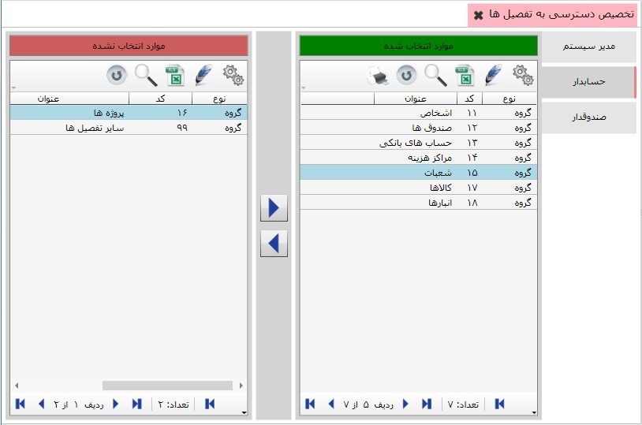
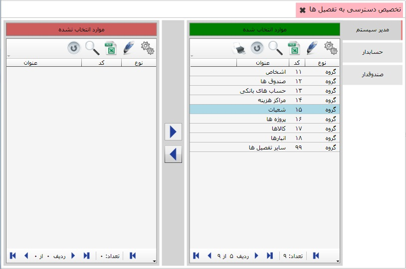

تخصیص دسترسی به تفصیل ها
به کمک این منو می توانید برای هر یک از کاربرهای سیستم حساب های تفصیل دلخواه را اختصاص دهید تا هر کاربر فقط به حساب های تفصیلی که به آن اختصاص داده شده است دسترسی داشته باشد. برای این کار روی این منو کلیک کنید تا صفحه مربوط به آن باز شود:

در سمت راست تصویر لیست کاربرانی که با نرم افزار کار می کنند وجود دارد. برای تخصیص دسترسی تفصیل به کاربر مورد نظر روی نام آن کاربر کلیک کنید.(در شکل بالا کاربر حسابدار در حالت انتخاب است.)
در جدول سمت راست گروه تفصیل هایی که کاربر به آن ها دسترسی دارد نمایش داده می شود و در جدول سمت راست نیز گروه تفصیل هایی که به کاربر انتخاب شده تخصیص نیافته است قرار دارد.
با استفاده از دو کلید
 و
و
 می توانید تفصیل یا گروه های تفصیل را به کاربر مورد نظرتان اختصاص دهید یا از حالت تخصیص خارج کنید.
می توانید تفصیل یا گروه های تفصیل را به کاربر مورد نظرتان اختصاص دهید یا از حالت تخصیص خارج کنید.

در شکل بالا نیز کاربر مدیر سیستم انتخاب و همه گروه های تفصیل به آن اختصاص داده شده است.